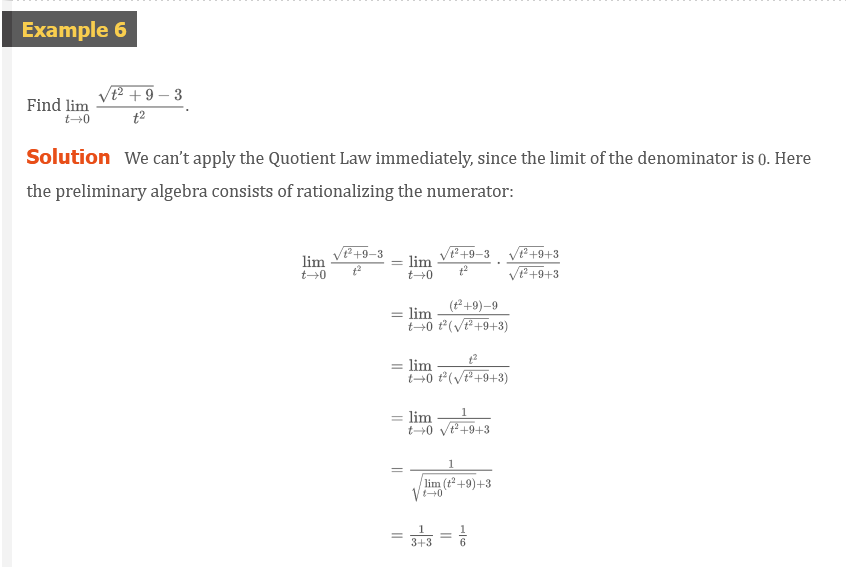
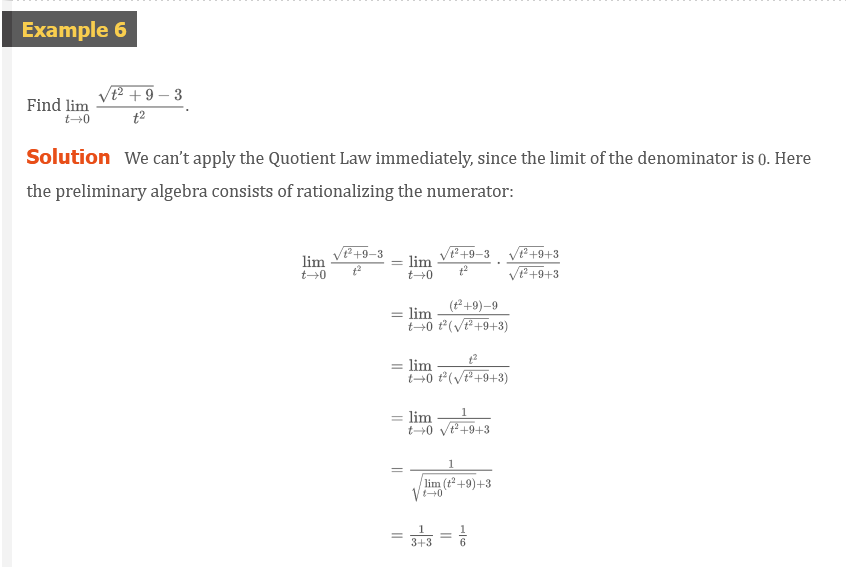
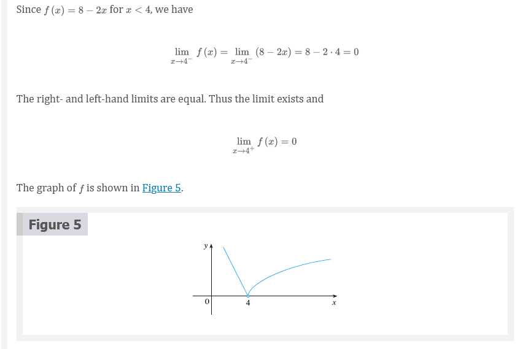
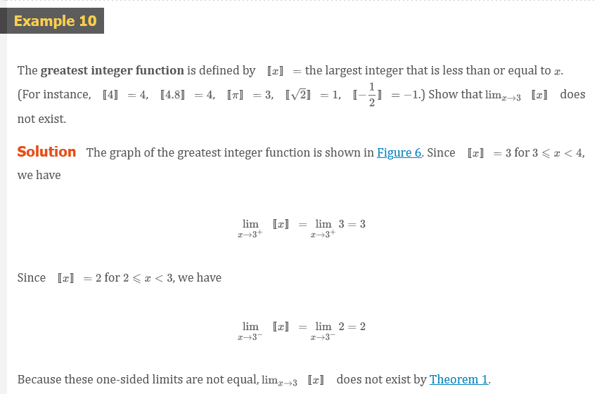
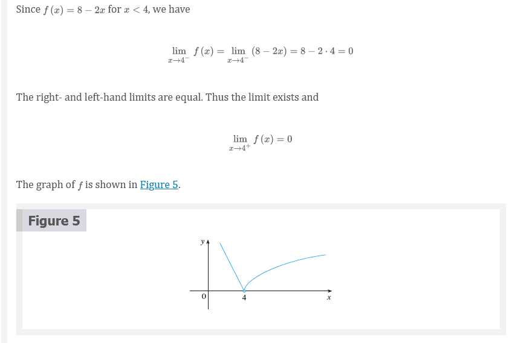
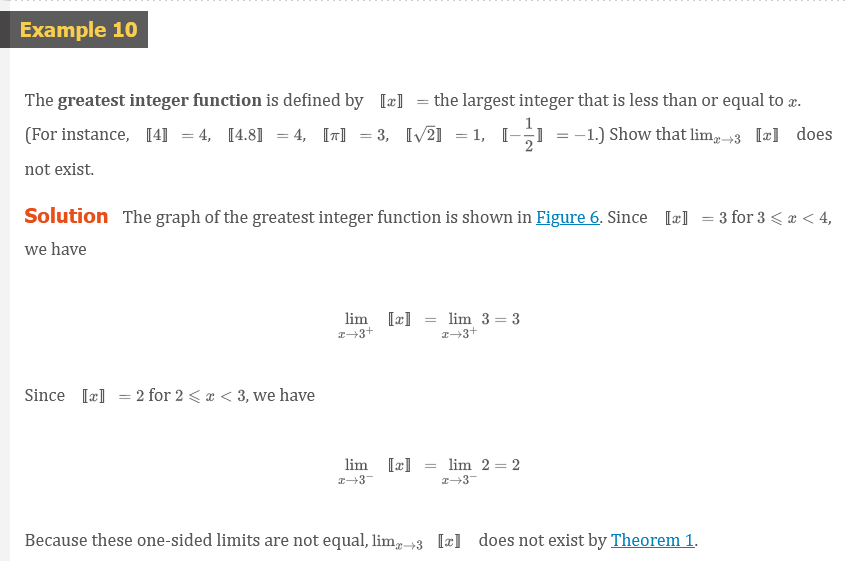

2020-08-18
Chapter 2: Limits and Derivatives
2.1 The Tangent Line and Velocity Problem
- The word tangent is derived from the Latin word tangent, which means “touching”.
- A secant line, from the Latin word secant, meaning cutting, is a line that cuts (intersects) a curve more than once.
The Tangent Problem
Finding the slope of a tangent (approximation) using only the tangent point.
Example 1:
Find an equation of the tangent line to the parabola \(y = x^{2}\)
Solution:
\[ m_{PQ} = \frac{x^{2} - 1}{x - 1} \]
For instance, for the point \(Q\) (1.5, 2.25) we have
\[ m_{PQ} = \frac{2.25 - 1}{1.5 - 1} = \frac{1.25}{0.5} = 2.5 \]
|
|
This suggests that the slope of the tangent line \(t\) should be \(m = 2\).
We say that the slope of the tangent line is the limit of the slopes of the secant lines, and we express this symbolically by writing
\[ \lim_{Q \to P} m_{PQ} = m \]
and
\[ \lim_{x \to 1} \frac{x^{2} - 1}{x - 1} = 2 \]
Assuming that the slope of the tangent line is indeed 2, we use the point-slope form of the equation of a line #Point-Slope Form to write the equation of the tangent line through (1, 1) as
\[ y - 1 = 2(x - 1) \]
or
\[ y = 2x - 1 \]
Figure 3 illustrates the limiting process that occurs in this example. As \(Q\) approaches \(P\) along the parabola, the corresponding secant lines rotate about \(P\) and approach the tangent line \(t\).

Example 2:
Use the data to draw the graph of this function and estimate the slope of the tangent line at the point where \(t = 0.04\)
| t | Q |
|---|---|
| 0.00 | 100.00 |
| 0.02 | 81.87 |
| 0.04 | 67.03 |
| 0.06 | 54.88 |
| 0.08 | 44.93 |
| 0.10 | 36.76 |
Solution:
Given the points \(P(0.04, 67.03)\) and \(R(0.00, 100.00)\) on the graph, we find that the slope of the secant line \(PR\) is
\[ m_{PR} = \frac{100.00 - 67.03}{0.00 - 0.04} = -824.25 \]
The table below shows the results of similar calculations for the slopes of other secant lines.
| \(R\) | \(m_{PR}\) |
|---|---|
| (0.00, 100,00) | -824.25 |
| (0.02, 81.87) | -742.00 |
| (0.06, 54.88 ) | -607.50 |
| (0.08, 44,93) | -552.50 |
| (0.10, 36.76) | -504.50 |
From this table we would expect the slope of the tangent line at \(t= 0.04\) to lie somewhere between \(-742\) and \(-607.5\). In fact, the average of the slopes of the two closest secant lines is
\[ \frac{1}{2}(-742 - 607.5) = -674.75 \]
By this method, the slope of the tangent line is approximately \(\mathbf{-675}\)
Another method is to draw an approximation to the tangent line at \(P\) and measure the sides of the triangle \(ABC\)

This gives an estimate of the slop of the tangent line as
\[ -\frac{\left | AB \right |}{\left | BC \right |} \approx - \frac{80.4 - 53.6}{0.06 - 0.02} = 670 \]
The Velocity Problem
Example 3:
Suppose that a ball is dropped from the upper observation deck of the CN Tower in Toronto, \(450 m\) above the ground. Find the velocity of the ball after 5 seconds.
Solution:
If the distance fallen after \(t\) seconds is denoted by \(s(t)\) and measured in meters
\[ s(t) = 4.9t^{2} \]
The difficulty in finding the velocity after 5 seconds is that we are dealing with a single instant of time \((t = 5)\), so no time interval is involved. However, we can approximate the desired quantity by computing the average velocity over the brief time interval of a tenth of a second from \(t = 5\) to \(t = 5.1\):
\[ \begin{aligned} \text{average velocity} &= \tfrac{\text{change in position}}{\text{time elapsed}} \\ &= \tfrac{s(5.1) - s(5)}{0.1} \\ &= \tfrac{4.9(5.1)^{2} - 4.9(5)^{2}}{0.1} = 49.49m/s \end{aligned} \]
The following table shows the results of similar calculations of the average velocity over successively smaller time periods.
| Time interval | Average velocity (m/s) |
|---|---|
| \(5 \le t \le 6\) | 53.9 |
| \(5 \le t \le 5.1\) | 49.49 |
| \(5 \le t \le 5.05\) | 49.245 |
| \(5 \le t \le 5.01\) | 49.049 |
| \(5 \le t \le 5.001\) | 49.0049 |
It appears that as we shorten the time period, the average velocity is becoming closer to \(49m/s\). The instantaneous velocity when \(t = 5\) is defined to be the limiting value of these average velocities over shorter and shorter time periods that start at \(t = 5\). Thus it appears that the (instantaneous) velocity after 5 seconds is
\[ v = 49m/s \]
This is also related to the tangent problem and finding velocities. If we consider the points \(P(a, 4.9a^{2}\) and \(Q(a + h, 4.9(a + h)^{2}\) on the graph, then the slope of the secant line \(PQ\) is
\[ m_{PQ} = \frac{4.9(a + h)^{2} - 4.9a^{2}}{(a + h) + a} \]
which is the same as the average velocity over the time interval \([a, a + h]\). Therefore the velocity at time \(t = a\) (the limit of these average velocities as \(h\) approaches \(0\)) must be equal to the slope of the tangent line at \(P\) (the limit of the slopes of the secant lines).
Other Resources:
Other Resources:
2.2 The Limit of a Function
Behavior of the function \(f\) defined by \(f(x) = x^{2} - x + 2\) for values of \(x\) near 2.
The following table gives values of \(f(x)\) for values of \(x\) close to 2 but not equal to 2.
| \(x\) | \(f(x)\) |
|---|---|
| 1.0 | 2.000000 |
| 1.5 | 2.750000 |
| 1.8 | 3.440000 |
| 1.9 | 3.710000 |
| 1.95 | 3.852500 |
| 1.99 | 3.970100 |
| 1.995 | 3.985025 |
| 1.999 | 3.997001 |
| 3.0 | 8.000000 |
| 2.5 | 5.750000 |
| 2.2 | 4.640000 |
| 2.1 | 4.310000 |
| 2.05 | 4.152500 |
| 2.01 | 4.030100 |
| 2.005 | 4.015025 |
| 2.001 | 4.003001 |
From the table and the graph of \(f\)(a parabola) shown in Figure 1 we see that the closer \(x\) is to 2 (on either side of 2), the closer \(f(x)\) is to 4. In fact, it appears that we can make the values of \(f(x)\) as close as we like to 4 by taking \(x\) sufficiently close to 2. We express this by saying “the limit of the function \(f(x) = x^{2} - x + 2\) as \(x\) approaches 2 is equal to 4”. The notation for this is
\[ \lim_{x \to 2} (x^{2} - x + 2) = 4 \]

Intuitive Definition of a Limit
Suppose \(f(x)\) is defined when \(x\) is near the number \(a\). (This means that \(f\) is defined on some open interval that contains \(a\), except possibly at \(a\) itself.) then we write
\[ \lim_{x \to a} f(x) = L \]
and say
“the limit of \(f(x)\), as \(x\) approaches \(a\), equals \(L\)”
if we can make the value of \(f(x)\) arbitrarily close to \(L\) (as close to \(L\) as we like) by restricting \(x\) to be sufficiently close to \(a\) (on either side of \(a\)) but not equal to \(a\).

One-Sided Limits
We write
\[ \lim_{x \to a^{-}} f(x) = L \]
and say the left-hand limit of \(f(x)\) as \(x\) approaches \(a\) [or the limit of \(f(x)\) as \(x\) approaches \(a\) from the left] is equal to \(L\) we can make the values of \(f(x)\) arbitrarily close to \(L\) by taking \(x\) to be sufficiently close to \(a\) with \(x\) less less than \(a\).
Similarly, if we require that \(x\) be greater than \(a\) we get “the right-hand limit of \(f(x)\) as \(x\) approaches \(a\) is equal to \(L\)” and we write
\[ \lim_{x \to a^{+}} f(x) = L \]
\[ \lim_{x \to a} = L \text{\;\;if and only if\;\;} \lim_{x \to a^{-}} f(x) = L \text{\;\;and\;\;} \lim_{x \to a^{+}} f(x) = L \]
When a limit doesn’t approach the same value from both sides, we say that the limit doesn’t exist.

- \(\lim_{x \to 2^{-}} g(x) = 3\) and
- \(\lim_{x \to 2^{+}} g(x) = 1\)
- Since the left and right limits are different, we conclude that \(\lim_{x \to 2} g(x)\) does not exist.
- \(\lim_{x \to 5^{-}} g(x) = 2\) and
- \(\lim_{x \to 5^{+}} g(x) = 2\)
- This time the left and right limits are the same and so we have \(\lim_{x \to 5} g(x) = 2\)
Despite this fact, notice that \(g(5) \neq 2\).
Infinite Limits
Let \(f\) be a function defined on both sides of \(a\), except possibly at \(a\)itself. then
\[ \lim_{x \to a} f(x) = \infty \]
means that the values of \(f(x)\) can be made arbitrarily large (as alrge as we please) by taking \(x\) sufficiently close to \(a\), but not equal to \(a\).

Another notation for \(\lim_{x \to a} f(x) = \infty\) is
\[ f(x) = \infty \;\;\; as \;\;\; x \to a \]


The vertical line \(x = a\) is called a vertical asymptote of the curve \(y = f(x)\) if at least one of the following statements is true:
\[ \lim_{x \to a} f(x) = \infty \lim_{x \to a^{-}} f(x) = \infty \;\; \lim_{x \to a^{+}} = \infty \\ \lim_{x \to a} f(x) = -\infty \;\; \lim_{x \to a^{-}} f(x) = -\infty \;\; \lim_{x \to a^{+}} f(x) = -\infty \]
Example 10:
Find the vertical asymptote of \(f(x) = \tan(x)\).
Solution
Because
\[ \tan(x) = \frac{\sin(x)}{\cos(x)} \]
There are potential vertical asymptotes where \(\cos(x) = 0\). In fact, since \(\cos(x) \to 0^{+}\) as \(x \to (\pi/2)^{-}\) and \(\cos(x) \to 0^{-}\) as \(x \to (\pi/2)^{+}\), whereas \(\sin(x)\) is positive (near 1) when \(x\) is near \(\pi/2\), we have
\[ \lim_{x \to (\pi/2)^{-}} \tan(x) = \infty \]
and
\[ \lim_{x \to (\pi/2)^{+}} \tan(x) = -\infty \]
Other Resources:
- `Estimating limit values from graphs
- `Unbounded limits
- `One-sided limits from graphs
- `One-sided limits from graphs: asymptote
- `Connecting limits and graphical behavior
- `Approximating limits using tables
- `Estimating limits from tables
- `One-sided limits from tables
2.3 Calculating Limits Using the Limit Laws
Suppose that \(c\) is a constant and the limits
\[ \lim_{x \to a} f(x) \]
and
\[ \lim_{x \to a} g(x) \]
exist. Then…
Limit Laws
\[ \underline{\boldsymbol{Sum Law}} \\ 1.\; \lim_{x \to a} [f(x) + g(x)] = \lim_{x \to a} f(x) + \lim_{x \to a} g(x) \\ ~\\ \underline{\boldsymbol{Difference Law}} \\ 2.\; \lim_{x \to a} [f(x) - g(x)] = \lim_{x \to a} f(x) - \lim_{x \to a} g(x) \\ ~\\ \underline{\boldsymbol{Constant Multiple Law}} \\ 3.\; \lim_{x \to a} [cf(x)] = c \lim_{x \to a} f(x) \\ ~\\ \underline{\boldsymbol{Product Law}} \\ 4.\; \lim_{x \to a} [f(x)g(x)] = \lim_{x \to a} f(x) \cdot \lim_{x \to a} g(x) \\ ~\\ \underline{\boldsymbol{Quotient Law}} \\ 5.\; \lim_{x \to a} \frac{f(x)}{g(x)} = \frac{\lim_{x \to a} f(x)}{\lim_{x \to a} g(x)} \text{ if } \lim_{x \to a} g(x) \neq 0 \\ ~\\ \underline{\boldsymbol{Power Law}} \\ 6.\; \lim_{x \to a} [f(x)]^{n} = [\lim_{x \to a} f(x)]^{n} \; \text{ where } n \text{ is a positive integer } \\ 7.\; \lim_{x \to a} c = c \\ 8.\; \lim_{x \to a} x = a \\ 9.\; \lim_{x \to a} x^{n} = a^{n} \; \text{ where } n \text{ is a positive integer } \\ 10.\; \lim_{x \to a} \sqrt[n]{x} = \sqrt[n]{a} \; \text{ where } n \text{ is a positive integer } ~\\ \underline{\boldsymbol{Root Law}} \\ 11.\; \lim_{x \to a} \sqrt[n]{f(x)} = \sqrt[n]{\lim_{x \to a} f(x)} \; \text{ where } n \text{ is a positive integer } \\ [\text{ if } n \text{ is even, we assume that } \lim_{x \to a} f(x) > 0 \text{. }] \]


Direct Substitution Property
If \(f\) is a polynomial or a rational function and \(a\) is in the domain of \(f\), then
\[ \lim_{x \to a} f(x) = f(a) \]
NOTE: Notice that in Example 3 we do not have an infinite limit even though the denominator approaches \(0\) as \(x \to 1\). When both numerator and denominator approach 0 the limit may be infinite or it may be some finite value.

 


Theorem 1
\[ \lim_{x \to a} f(x) = L \]
if and only if
\[ \lim_{x \to a^{-}} f(x) = L = \lim_{x \to a^{+}} f(x) \]


  
  
Theorem 2
if \(f(x) \le g(x)\) when \(x\) is near \(a\) (except possibly at \(a\)) and the limits of \(f\) and \(g\) both exist as \(x\) approaches \(a\) then
\[ \lim_{x \to a} f(x) \le \lim_{x \to a} g(x) \]
The Squeeze Theorem
if \(f(x) \le g(x) \le h(x)\) when \(x\) is near \(a\) (except possibly at \(x\)) and
\[ \lim_{x \to a} f(x) = \lim_{x \to a} h(x) = L \]
then
\[ \lim_{x \to a} g(x) = L \]
The Squeeze Theorem, which is sometimes called the Sandwich Theorem or the Pinching Theorem, is illustrated by Figure 7. It says if \(g(x)\) is squeezed between \(f(x)\) and \(h(x)\) near \(a\), and if \(f\) and \(h\) have the same limit \(L\) at \(a\), then \(g\) is forced to have the same limit \(L\) at \(a\).


Other Resources:
- `Limit properties
- `Limits of combined functions
- `Limits of combined functions: piecewise functions
- `Limits of composite functions
- `Limits by direct substitution
- `Undefined limits by direct substitution
- `Limits of trigonometric functions
- `Limits of piecewise functions
- `Limits of piecewise functions: absolute value
- `Limits by factoring
- `Limits by rationalizing
Resources
- `The Tangent Line and Velocity Problem
- `Calculus 1: Limits & Derivatives (2 of 27) The Slope of a Line
- `Limits Intro
- Limits Intro Article
- `Estimating limit values from graphs
- `Unbounded limits
- `One-sided limits from graphs
- `One-sided limits from graphs: asymptote
- `Connecting limits and graphical behavior
- `Approximating limits using tables
- `Estimating limits from tables
- `One-sided limits from tables
- `Limit properties
- `Limits of combined functions
- `Limits of combined functions: piecewise functions
- `Limits of composite functions
- `Limits by direct substitution
- `Undefined limits by direct substitution
- `Limits of trigonometric functions
- `Limits of piecewise functions
- `Limits of piecewise functions: absolute value
- `Limits by factoring
- `Limits by rationalizing
Textbook